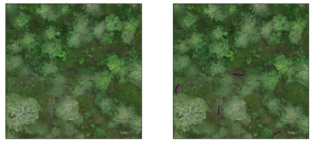
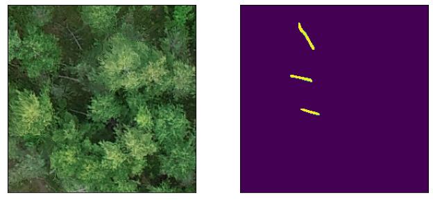

Tiling dataset for object detection or instance segmentation
from pathlib import Pathfrom drone_detector.processing.tiling import*import os, sysimport geopandas as gpdimport rasterio as riofrom rasterio import plot as rioplotimport randomimport matplotlib.pyplot as plt
/opt/conda/lib/python3.9/site-packages/tqdm/auto.py:22: TqdmWarning: IProgress not found. Please update jupyter and ipywidgets. See https://ipywidgets.readthedocs.io/en/stable/user_install.html
from .autonotebook import tqdm as notebook_tqdm
This example uses deadwood data from Hiidenportti. For this purpose, we use only 5 tiles to speed things up.
tile_folder = Path('../../data/raw/hiidenportti/virtual_plots/train/images/')vector_folder = Path('../../data/raw/hiidenportti/virtual_plots/train/vectors/')outpath = Path('../data/hiidenportti/processed_example/')tiles =sorted(os.listdir(tile_folder))[:5]vectors =sorted([f for f in os.listdir(vector_folder) if f.endswith('geojson')])[:5]assertlen(tiles) ==len(vectors)
These virtual plots are tiled into 512 times 512 pixel grid. Then, the vector files are tiled using the same grid. By setting min_area_pct to 0.25, we discard all polygons that are cut so that their area is less than 25% of the original area. Tiler.tile_vector discards all grid cells that don’t contain any polygons
for t in tiles:ifnot os.path.exists(outpath/t[:-4]): os.makedirs(outpath/t[:-4]) shp_fname = t.replace('tif', 'geojson') tilesize =512 tiler = Tiler(outpath=outpath/t[:-4], gridsize_x=tilesize, gridsize_y=tilesize, overlap=(0,0)) tiler.tile_raster(str(tile_folder/t)) tiler.tile_vector(vector_folder/shp_fname, min_area_pct=0.25)
for d in os.listdir(outpath):print(f"""{d} was split into {len(os.listdir(outpath/d/'raster_tiles'))} raster cells and {len(os.listdir(outpath/d/"vector_tiles"))} vector cells""")
104_111_Hiidenportti_Chunk4_orto was split into 16 raster cells and 16 vector cells
104_18_Hiidenportti_Chunk5_orto was split into 16 raster cells and 15 vector cells
104_118_Hiidenportti_Chunk6_orto was split into 40 raster cells and 35 vector cells
104_16_Hiidenportti_Chunk5_orto was split into 110 raster cells and 108 vector cells
104_102_Hiidenportti_Chunk9_orto was split into 16 raster cells and 16 vector cells
ex_file = random.sample(os.listdir(outpath/d/'vector_tiles'), 1)[0]fig, axs = plt.subplots(1,2, figsize=(11,5))for a in axs: a.set_xticks([]) a.set_yticks([])with rio.open(outpath/d/f"raster_tiles/{ex_file.replace('geojson', 'tif')}") as im: rioplot.show(im, ax=axs[0]) mask = gpd.read_file(outpath/d/'vector_tiles'/ex_file) rioplot.show(im, ax=axs[1]) mask.plot(ax=axs[1], column='groundwood')

Tiling dataset for semantic segmentation
outpath = Path('../data/hiidenportti/processed_unet_example/')tiles =sorted(os.listdir(tile_folder))[:5]vectors =sorted([f for f in os.listdir(vector_folder) if f.endswith('geojson')])[:5]assertlen(tiles) ==len(vectors)
For semantic segmentation, we split the data into 256 times 256 pixel grid. Vector files are then tiled and rasterized to the same grid, in such way that raster images are saved. This method saves target mask for each cell even if they don’t contain any masks.
for t in tiles:ifnot os.path.exists(outpath/t[:-4]): os.makedirs(outpath/t[:-4]) shp_fname = t.replace('tif', 'geojson') tilesize =256 tiler = Tiler(outpath=outpath/t[:-4], gridsize_x=tilesize, gridsize_y=tilesize, overlap=(0,0)) tiler.tile_raster(str(tile_folder/t)) tiler.tile_and_rasterize_vector(tile_folder/t, vector_folder/shp_fname, column='groundwood')
for d in os.listdir(outpath):print(f"""{d} was split into {len(os.listdir(outpath/d/'raster_tiles'))} raster cells and {len(os.listdir(outpath/d/"rasterized_vector_tiles"))} vector cells""")
104_111_Hiidenportti_Chunk4_orto was split into 64 raster cells and 64 vector cells
104_18_Hiidenportti_Chunk5_orto was split into 64 raster cells and 64 vector cells
104_118_Hiidenportti_Chunk6_orto was split into 160 raster cells and 160 vector cells
104_16_Hiidenportti_Chunk5_orto was split into 440 raster cells and 440 vector cells
104_102_Hiidenportti_Chunk9_orto was split into 64 raster cells and 64 vector cells
ex_file = random.sample(os.listdir(outpath/d/'rasterized_vector_tiles'), 1)[0]fig, axs = plt.subplots(1,2, figsize=(11,5))for a in axs: a.set_xticks([]) a.set_yticks([])with rio.open(outpath/d/"raster_tiles"/ex_file) as im: rioplot.show(im, ax=axs[0])with rio.open(outpath/d/"rasterized_vector_tiles"/ex_file) as mask: rioplot.show(mask, ax=axs[1])

Tiling non-geospatial data
So far Tiler doesn’t really support data without sensible geotransform. It is, however, possible to work around and might be available in the future.